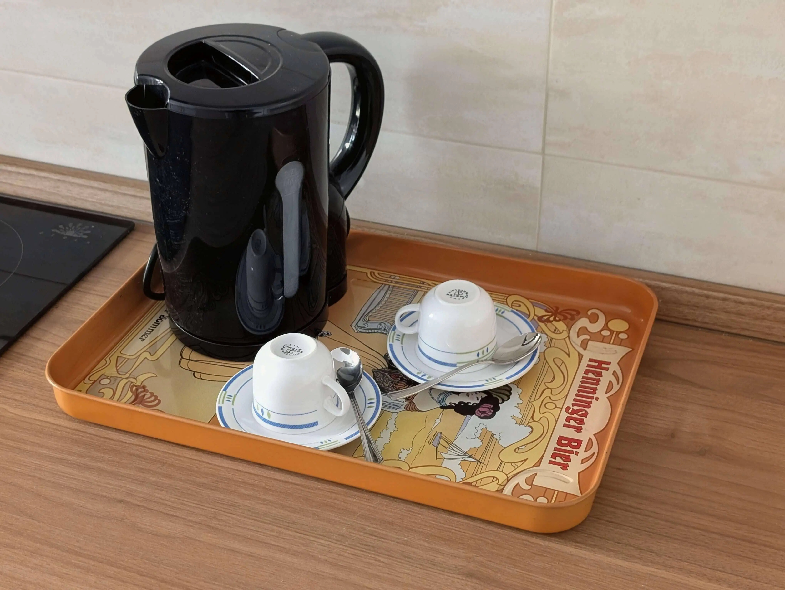
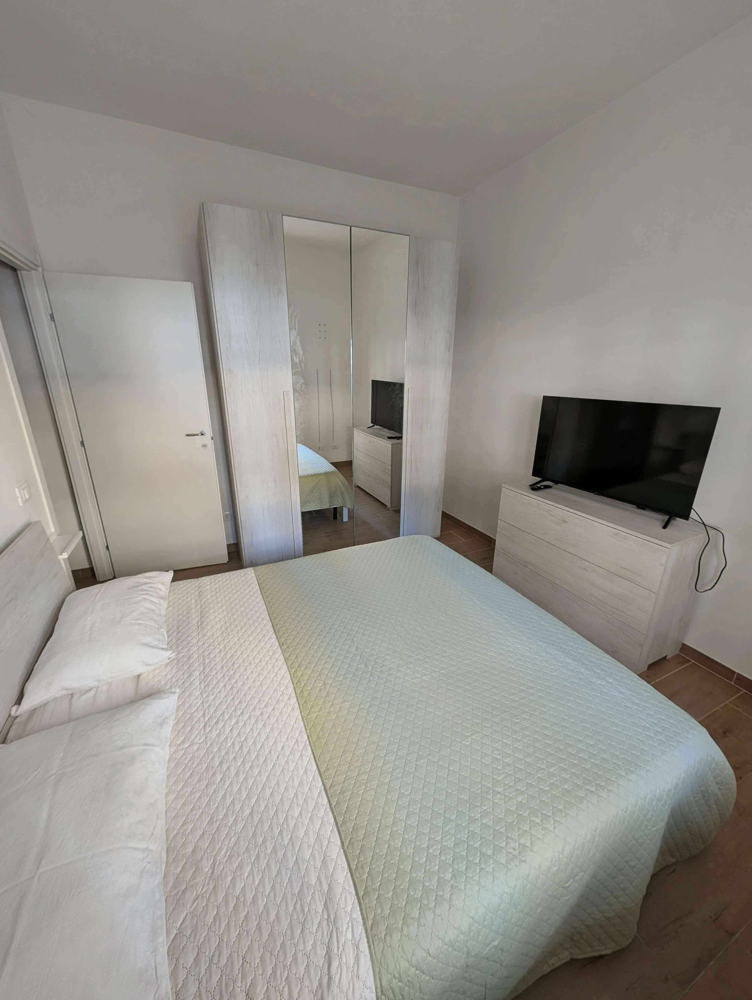
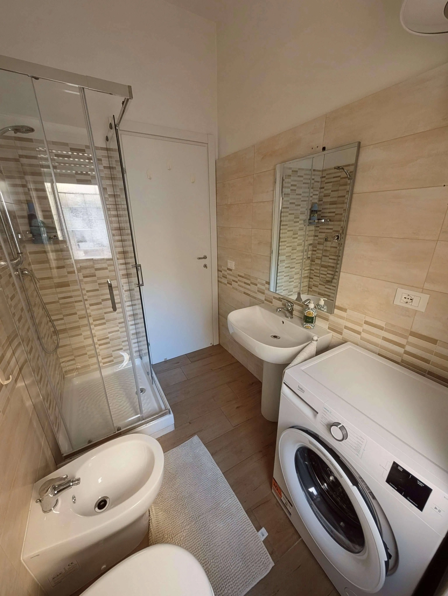
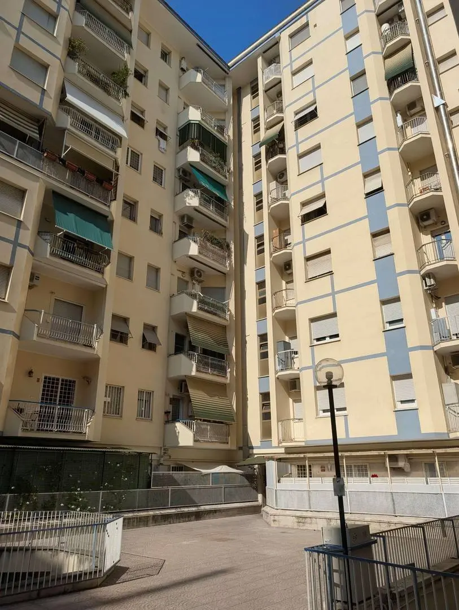

Lotto 235 Garbatella
A direct-booking website for a vacation rental in Rome — and the operations system behind it. Guests pick dates, see dynamic pricing and pay by card or bank transfer. The platform handles the rest: availability sync, Italian tourist compliance, self check-in, receipts and time-windowed smart-lock access.





Not a landing page. An operating system for one apartment.
The goal was to replace the patchwork of OTA dashboards, spreadsheets and manual messages with a single source of truth. A booking has to survive the full lifecycle: availability check, pricing, payment, invoice, guest identity, compliance filings, access credentials, cleaning and cancellation.
The public site is deliberately small. Most of the work is in the admin panel and the background jobs that keep calendars, payments and legal obligations in sync — idempotently, because two webhooks or a retried cron must not create two receipts.
Direct booking
Date and guest picker, weekend/holiday surcharges, extra-guest fees, weekly discounts and coupons.
Payments
Stripe Checkout with full-payment discount or deposit, balance invoices and refunds on cancellation.
Availability
iCal import from Airbnb, Booking and VRBO, calendar blocks and orphan cleanup.
Compliance
Questura AlloggiatiWeb SOAP, ROSS1000 Lazio, tourist tax and progressive-numbered receipts.
Smart access
Shelly gate relay, Nuki door and temporary keypad PINs scoped to each reservation window.
Operations
Scheduled sync, balance invoices, cleaning links, keypad revocation, daily filings and boiler control.
One Flask app, many scheduled edges.
An application factory keeps the web process, CLI tasks and scheduler sharing the same services and models.
What made it interesting
Idempotent side effects
Webhooks, cron jobs and retries can overlap. Receipts, filings and invoices are keyed so the same event cannot be applied twice.
Guest identity
Self check-in collects every Questura field, including companions. Passport/ID documents go through a dual MRZ OCR path (CNN + Tesseract).
Time windows
Access links and keypad PINs are valid only around the reservation, with revocation and cleaning-share links as separate scopes.
Legal output
Tourist tax is computed per adult/night with exemptions and caps; receipts carry progressive numbering and the correct stamp duty.
Backend
Integrations
Delivery
github.com/NegriLuca/apt-website ↗